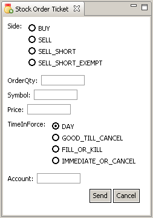

Order Entry
Order entry can be accomplished in two ways: using the Stock Order Ticket view, and by typing orders directly into the Command Entry Area.
Stock Order Ticket view
With the stock order ticket, you can use a combination of your keyboard and mouse to enter orders. To open the Stock Order Ticket view, if it's not already visible, click on the Window menu and choose Stock Order Ticket.
The stock order ticket allows you to control the following properties of the order. (Currently only limit orders are supported)
- Side
- The side of the order that you want to take. Currently only buy, sell, sell short, and sell short exempt are available.
- OrderQty
- The share quantity for the order. This value must be an integer.
- Symbol
- The symbol for the stock referenced by this order.
- Price
- The limit price of the order. This value must be a number, either an integer or decimal number. Fractions are not allowed.
- TimeInForce
- The time the order will be in force. Currently supported are day, good till cancel, fill or kill, and immediate or cancel.
- Account
- The account into which to place the resulting position. This field is optional.
When you have adjusted the order settings appropriately, click the send button to send the order to the order routing system.
Command Entry Area
The Command Entry Areay is labelled "Command:" at the bottom Stock Order Ticket. You can activate the command entry area by typing <alt>-c.
Currently the following command types are supported
- New Order
{ B | S | SS | SSE} quantity symbol price [timeInForce [account]]- This command starts with one of "B" (buy), "S" (sell), "SS" (sell short), "SSE" (sell short exempt). That is followed by a quantity which must be an integer. After the quantity comes a symbol. A symbol can consist of any string of non-whitespace characters. Next comes the price, which can be either numeric or integer format. Finally two optional components, the time in force and the account. Time in force can be one of "DAY" (day), "GTC" (good 'til cancel), "FOK" (fill or kill), "CLO" (at the close), "OPG" (at the opening), "IOC" (immediate or cancel). The account can be any string of non-whitespace characters. Note that if you have an account, you must also have a time in force.
- Cancel order
-
C {clordid}+ - This command starts with a "C" followed by a list of ClOrdId (client order id) values separated by whitespace.
- Cancel/Replace Order
-
CXR clordid { P | Q } { price | quantity } - This command starts with "CXR" followed by a ClOrdId (client order id) of an open order. Next comes "P" or "Q", specifying replace of price or quantity
(replacement of both is not currently supported). Finally comes the price or quantity depending on the previous token.